Sprachwahl · Ticket 03 · Skizzenkatalog
Heute steht «🌐 Deutsch» klein in der Ecke oben rechts. Auf dem Handy hochkant klebt er zwischen «PRISMA» und dem Untertitel und geht unter. Hier stehen sechs andere Lagen neben dem heutigen Stand, alle im echten Menü aufgenommen. Zu jeder Lage zeigt ein Bild grob, wohin die Liste der Sprachen aus Ticket 02 aufgeht.
Bitte eine Variante wählen (Nummer genügt). Die Empfehlung steht am Ende.
Der Stand von heute zum Vergleich: der Schalter in der Ecke oben rechts, auf dem Handy hochkant in 8,5 px.
Das Bild «offen» zeigt die Liste aus Ticket 02 an dieser Stelle (mit ▾); geschlossen ist es genau der heutige Schalter.
| Grösse | Trefferfläche | Nächster Text | Schrift |
|---|---|---|---|
| Handy hochkant | 87 × 44 | 1 px «Ein Lichtsignal an die Sterne» | 8,5 px («Von vorn» 10) |
| Poco | 87 × 44 | 2 px «Ein Lichtsignal an die Sterne» | 8,5 px («Von vorn» 10) |
| Kleines Handy | 87 × 44 | 1 px «Ein Lichtsignal an die Sterne» | 8,5 px («Von vorn» 10) |
| Englisch | 85 × 44 | 1 px «A light signal to the stars» | 8,5 px («Von vorn» 10) |
| Handy quer | 92 × 44 | 136 px «Bergwald 10 / 10» | 8,5 px («Von vorn» 8,5) |
| Desktop | 108 × 44 | 293 px «Bergwald 10 / 10» | 10 px («Von vorn» 10) |
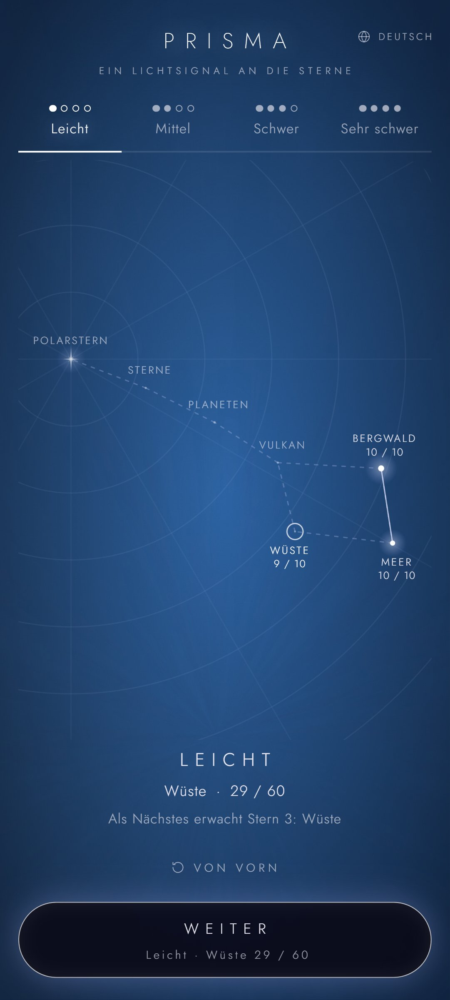
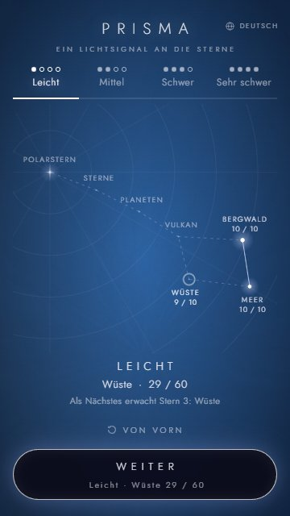
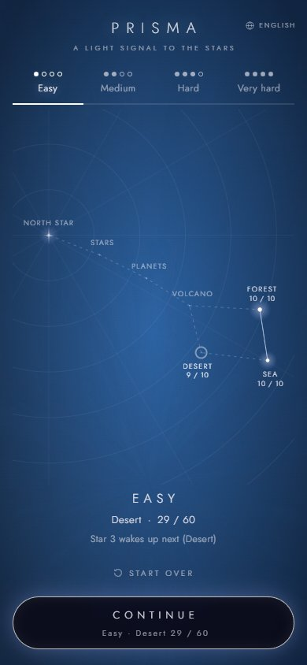
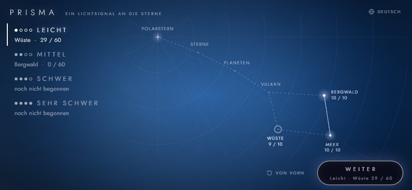
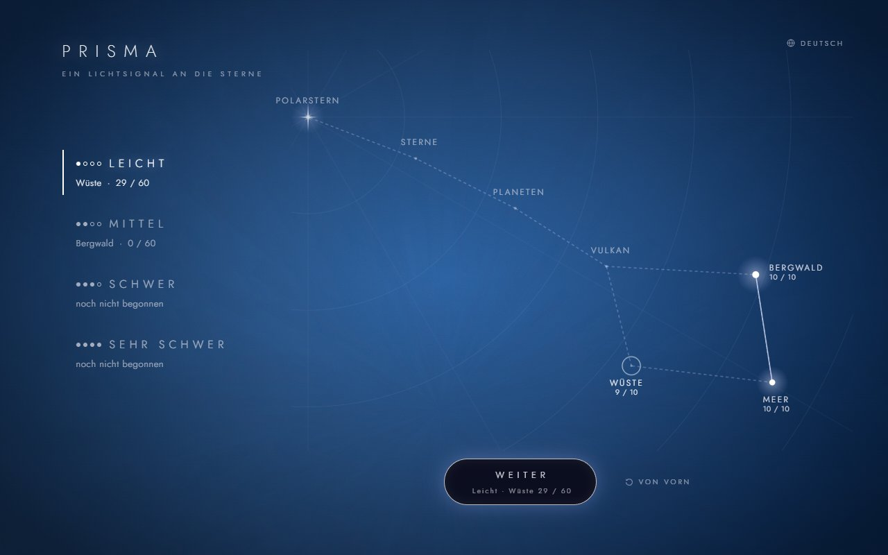
Der Schalter bleibt in der Ecke oben rechts, bekommt auf dem Handy hochkant aber eine eigene Zeile über dem Titel.
Die Liste geht nach unten auf, rechtsbündig unter dem Schalter.
| Grösse | Trefferfläche | Nächster Text | Schrift |
|---|---|---|---|
| Handy hochkant | 124 × 44 | 16 px «Prisma» | 10 px («Von vorn» 10) |
| Poco | 124 × 44 | 16 px «Prisma» | 10 px («Von vorn» 10) |
| Kleines Handy | 124 × 44 | 16 px «Prisma» | 10 px («Von vorn» 10) |
| Englisch | 121 × 44 | 17 px «Prisma» | 10 px («Von vorn» 10) |
| Handy quer | 107 × 44 | 136 px «Bergwald 10 / 10» | 8,5 px («Von vorn» 8,5) |
| Desktop | 124 × 44 | 293 px «Bergwald 10 / 10» | 10 px («Von vorn» 10) |
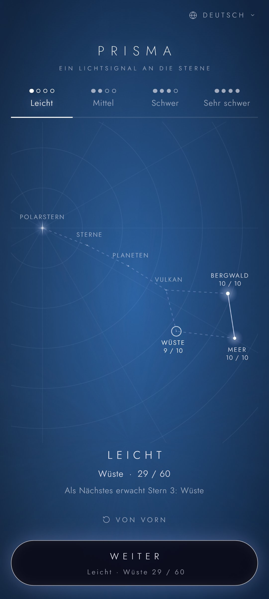
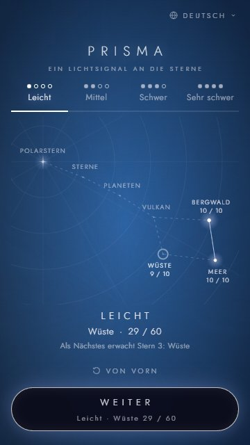
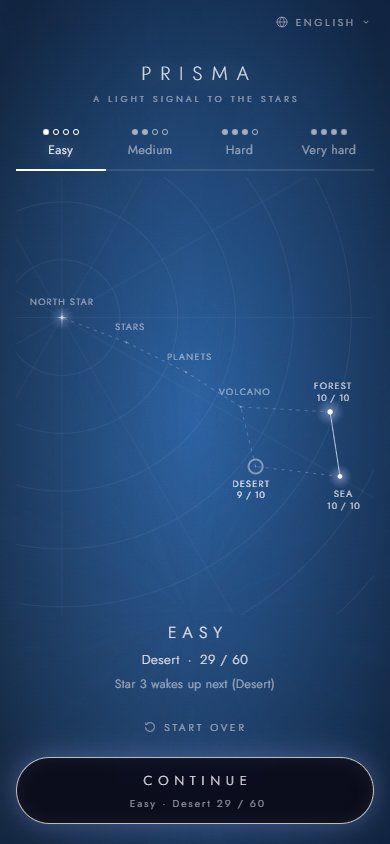
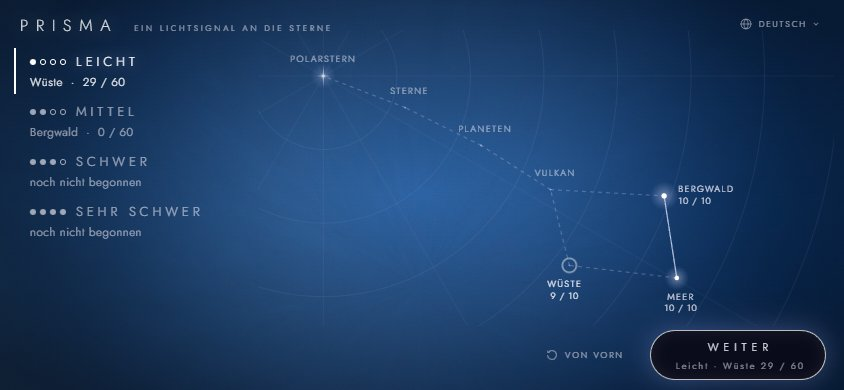
Die freie Seite links: auf dem Handy hochkant die Ecke oben links (eigene Zeile wie Variante 1), auf dem Desktop und quer unten links unter den Reitern, auf der Höhe von «Weiter».
Auf dem Handy geht die Liste nach unten auf, auf dem Desktop und quer nach oben.
| Grösse | Trefferfläche | Nächster Text | Schrift |
|---|---|---|---|
| Handy hochkant | 124 × 44 | 20 px «Prisma» | 10 px («Von vorn» 10) |
| Poco | 124 × 44 | 21 px «Prisma» | 10 px («Von vorn» 10) |
| Kleines Handy | 124 × 44 | 16 px «Prisma» | 10 px («Von vorn» 10) |
| Englisch | 121 × 44 | 21 px «Prisma» | 10 px («Von vorn» 10) |
| Handy quer | 107 × 44 | 94 px «noch nicht begonnen» | 8,5 px («Von vorn» 8,5) |
| Desktop | 124 × 44 | 140 px «noch nicht begonnen» | 10 px («Von vorn» 10) |
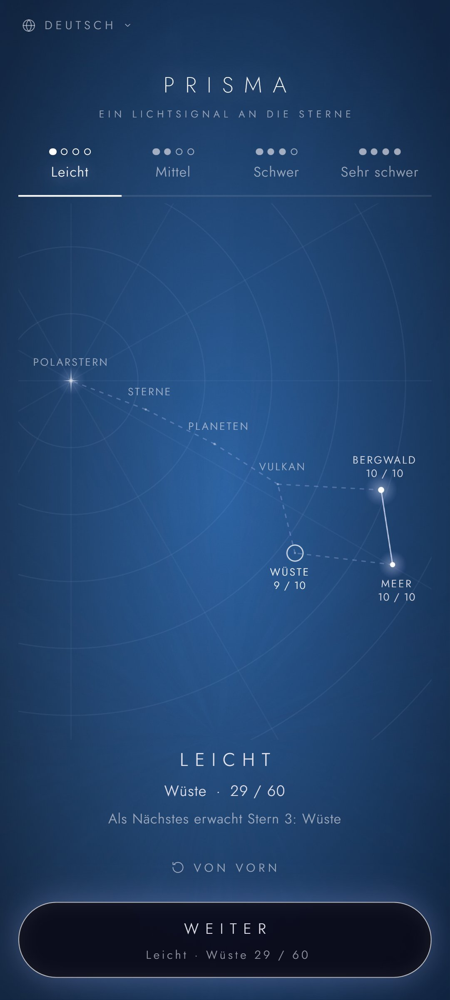
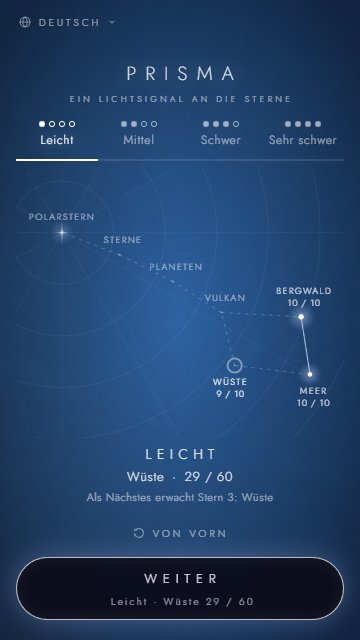
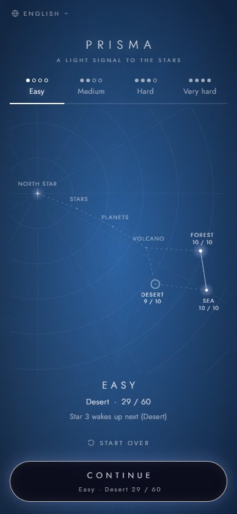
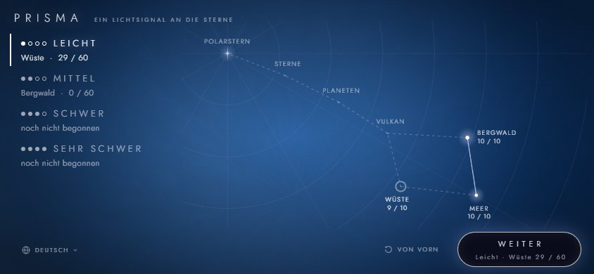
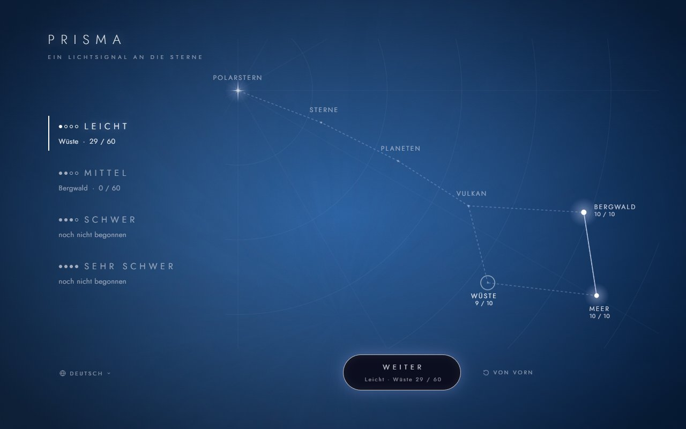
Der Schalter wird eine zweite leise Aktion neben «Von vorn», unten in Reichweite des Daumens.
Die Liste geht nach oben auf.
| Grösse | Trefferfläche | Nächster Text | Schrift |
|---|---|---|---|
| Handy hochkant | 124 × 44 | 16 px «Als Nächstes erwacht Stern 3: Wüste» | 10 px («Von vorn» 10) |
| Poco | 124 × 44 | 16 px «Als Nächstes erwacht Stern 3: Wüste» | 10 px («Von vorn» 10) |
| Kleines Handy | 124 × 44 | 16 px «Als Nächstes erwacht Stern 3: Wüste» | 10 px («Von vorn» 10) |
| Englisch | 121 × 44 | 16 px «Star 3 wakes up next (Desert)» | 10 px («Von vorn» 10) |
| Handy quer | 107 × 44 | 41 px «Wüste 9 / 10» | 8,5 px («Von vorn» 8,5) |
| Desktop | 124 × 44 | 24 px «Von vorn» | 10 px («Von vorn» 10) |
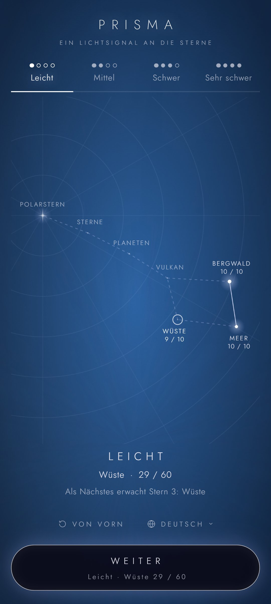
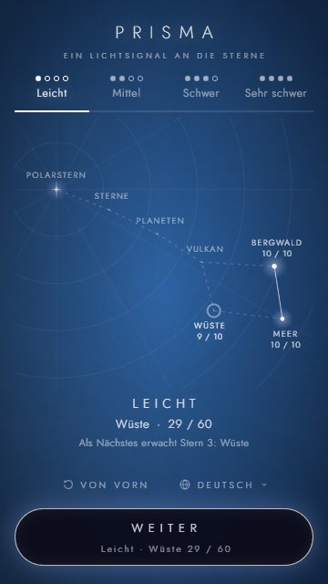
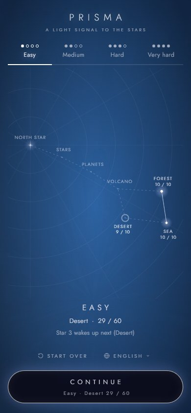
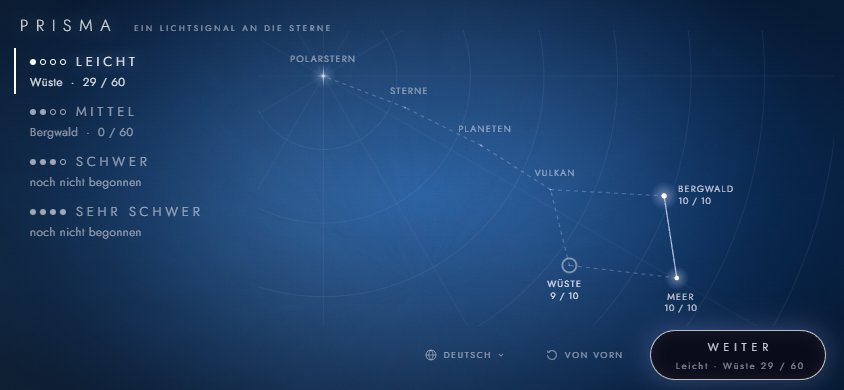
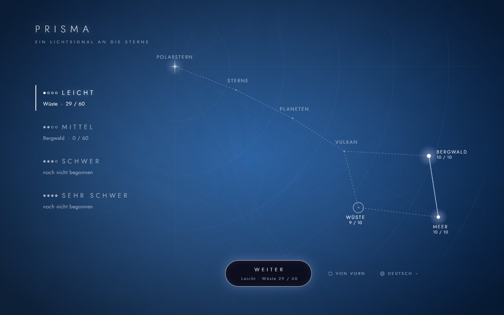
Der Schalter steht klein ganz unten unter dem Knopf «Weiter», wie in der Fusszeile einer Website.
Die Liste geht nach oben auf.
| Grösse | Trefferfläche | Nächster Text | Schrift |
|---|---|---|---|
| Handy hochkant | 124 × 44 | 19 px «Leicht · Wüste 29 / 60» | 10 px («Von vorn» 10) |
| Poco | 124 × 44 | 19 px «Leicht · Wüste 29 / 60» | 10 px («Von vorn» 10) |
| Kleines Handy | 124 × 44 | 16 px «Leicht · Wüste 29 / 60» | 10 px («Von vorn» 10) |
| Englisch | 121 × 44 | 19 px «Easy · Desert 29 / 60» | 10 px («Von vorn» 10) |
| Handy quer | 107 × 44 | 16 px «Leicht · Wüste 29 / 60» | 8,5 px («Von vorn» 8,5) |
| Desktop | 124 × 44 | 19 px «Leicht · Wüste 29 / 60» | 10 px («Von vorn» 10) |
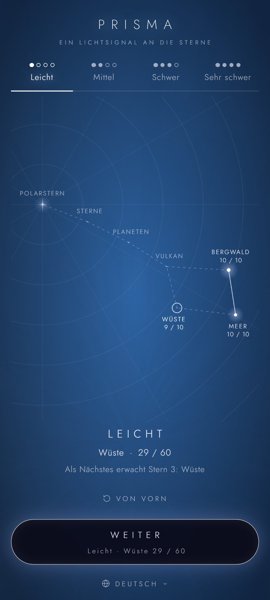
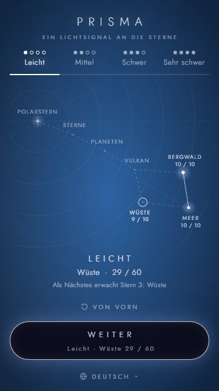
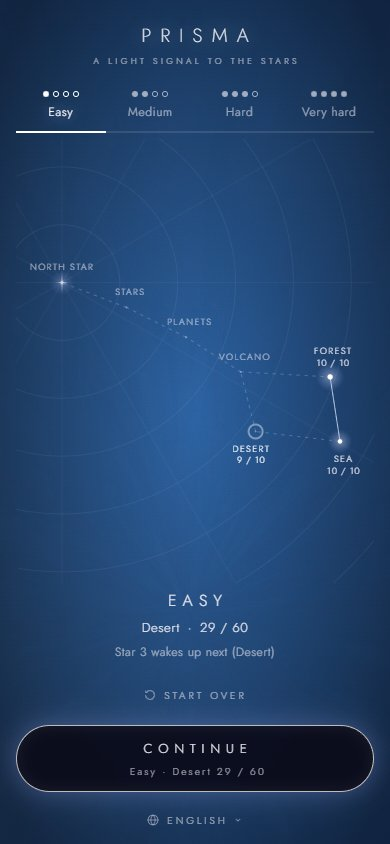
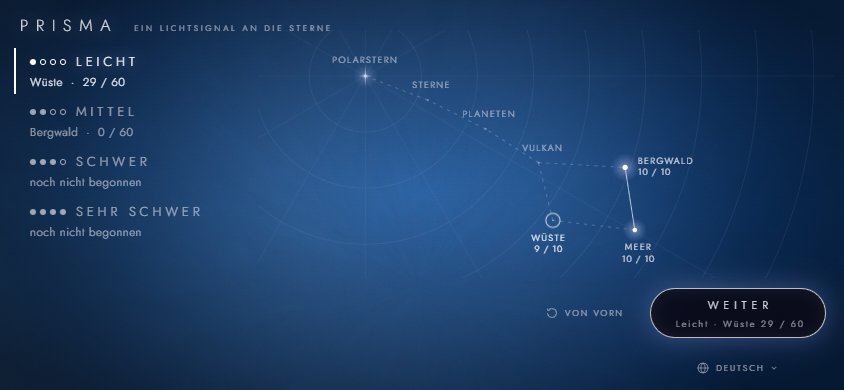
Ein runder Knopf nur mit dem Globus in der Ecke oben rechts; welche Sprache gilt, zeigt erst die Liste.
Die Liste geht nach unten auf, mit Häkchen bei der aktuellen Sprache.
| Grösse | Trefferfläche | Nächster Text | Schrift |
|---|---|---|---|
| Handy hochkant | 44 × 44 | 30 px «Ein Lichtsignal an die Sterne» | nur Zeichen («Von vorn» 10) |
| Poco | 44 × 44 | 31 px «Ein Lichtsignal an die Sterne» | nur Zeichen («Von vorn» 10) |
| Kleines Handy | 44 × 44 | 15 px «Ein Lichtsignal an die Sterne» | nur Zeichen («Von vorn» 10) |
| Englisch | 44 × 44 | 38 px «A light signal to the stars» | nur Zeichen («Von vorn» 10) |
| Handy quer | 44 × 44 | 142 px «Bergwald 10 / 10» | nur Zeichen («Von vorn» 8,5) |
| Desktop | 44 × 44 | 299 px «Bergwald 10 / 10» | nur Zeichen («Von vorn» 10) |
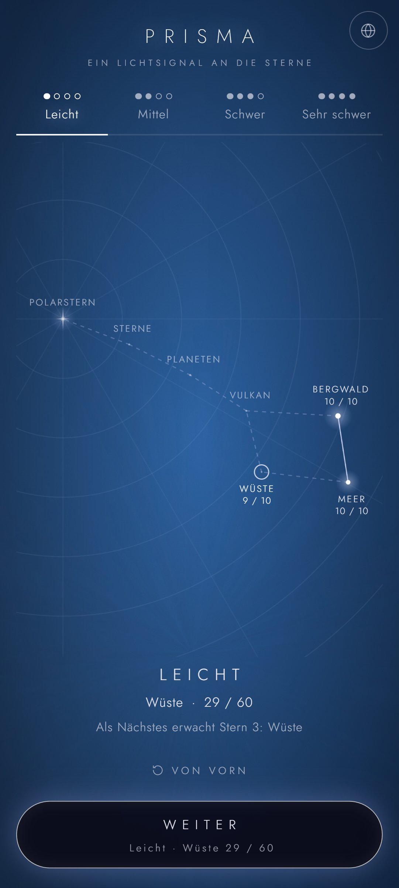
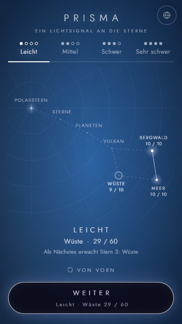
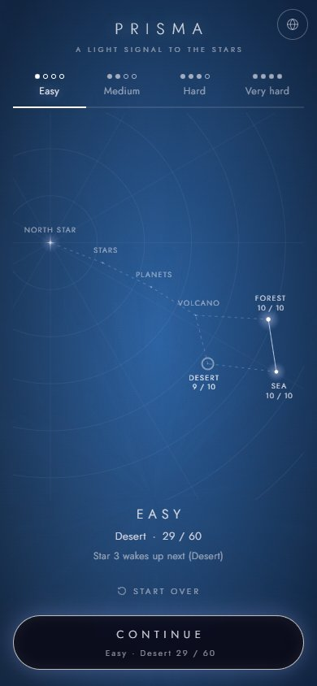
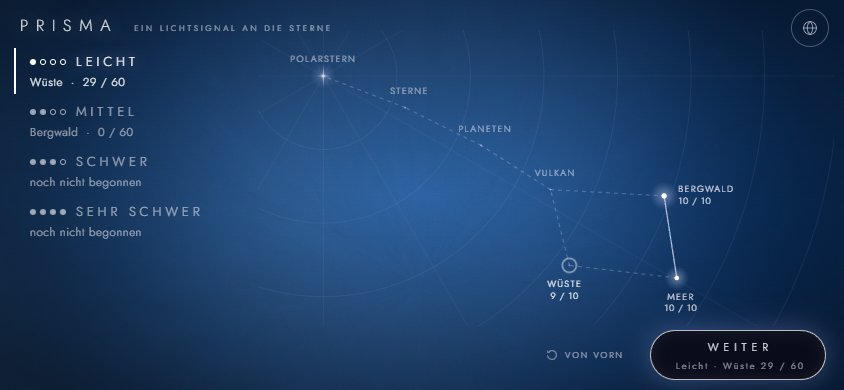
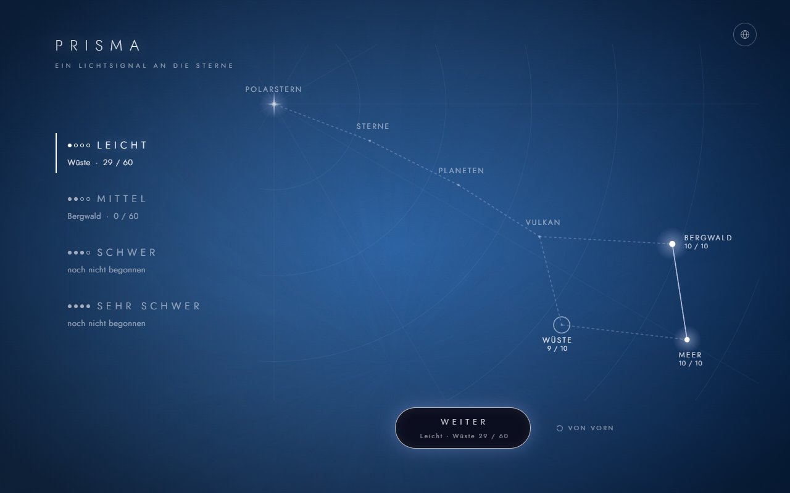
Der Schalter steht in der freien Ecke oben rechts in der Sternkarte, fein gerahmt wie die Legende einer echten Karte.
Die Liste geht nach unten in den leeren Himmel auf.
| Grösse | Trefferfläche | Nächster Text | Schrift |
|---|---|---|---|
| Handy hochkant | 124 × 44 | 22 px «Schwer» | 10 px («Von vorn» 10) |
| Poco | 124 × 44 | 23 px «Schwer» | 10 px («Von vorn» 10) |
| Kleines Handy | 124 × 44 | 22 px «Schwer» | 10 px («Von vorn» 10) |
| Englisch | 121 × 44 | 22 px «Hard» | 10 px («Von vorn» 10) |
| Handy quer | 106 × 44 | 108 px «Bergwald 10 / 10» | 8,5 px («Von vorn» 8,5) |
| Desktop | 124 × 44 | 261 px «Bergwald 10 / 10» | 10 px («Von vorn» 10) |
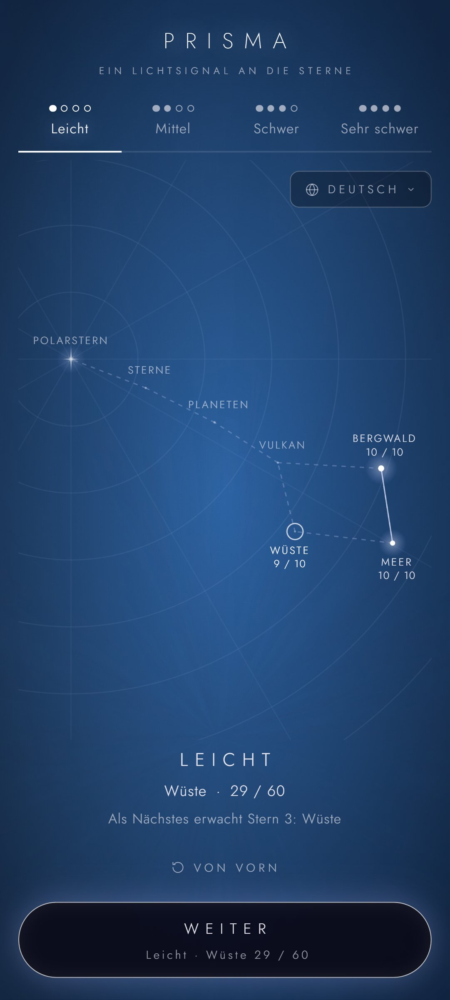
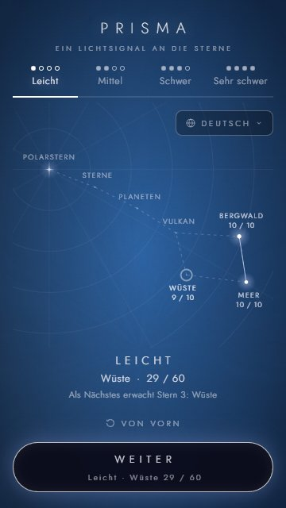
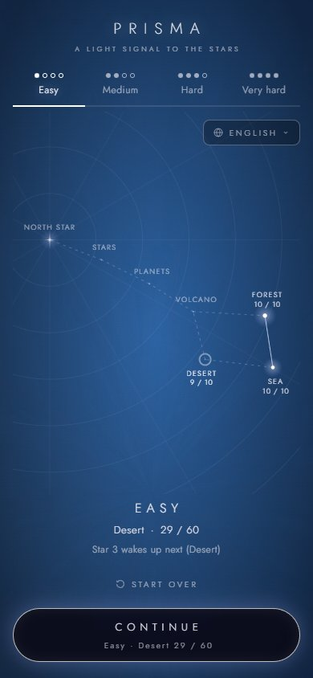
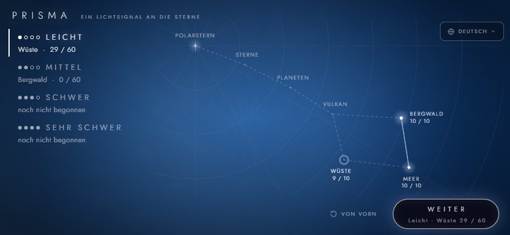
Variante 1, eigene Zeile oben rechts.
Der Preis: Titel, Reiter und Karte rücken auf dem Handy 38 px nach unten. Auf 360 × 640 bleibt die Karte gut lesbar (Bild bei Variante 1).
Zweite Wahl: Variante 6, Legende der Sternkarte. Sie passt, wenn der Schalter sichtbarer sein soll und die Karte keinen Platz abgeben soll. Nichts rückt, und die offene Liste deckt nichts. Dafür kommt mit dem Rahmen eine neue Form ins Menü, und die Lage hängt an der freien Ecke der Karte.
Eher nicht: Variante 4 (die offene Liste deckt «Weiter», ganz unten sucht man die Sprache zuletzt), Variante 2 (der Ort wechselt je nach Grösse) und Variante 5 (weicht vom Entscheid «Globus, Sprache und ▾» ab).
Aufgenommen am 18.11.2026 im Menü des Spiels (Stand ce9a0d5) in Headless-Chrome. Für jede Variante sind Stil und Aufbau des Menüs erst zur Laufzeit umgebaut; am Code des Spiels ist nichts geändert. Die offene Liste ist nur angedeutet, ihre Gestalt legt Ticket 02 fest. Bilder per Klick in voller Grösse.